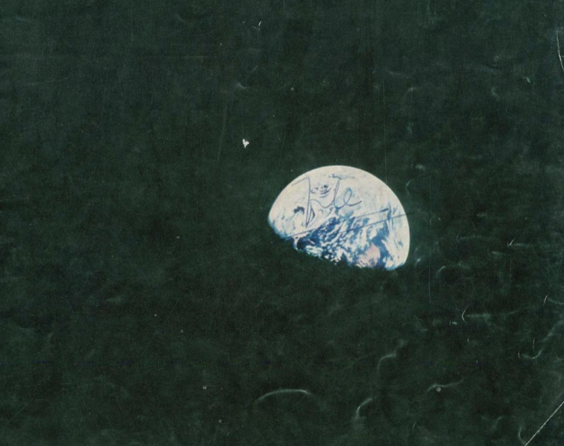
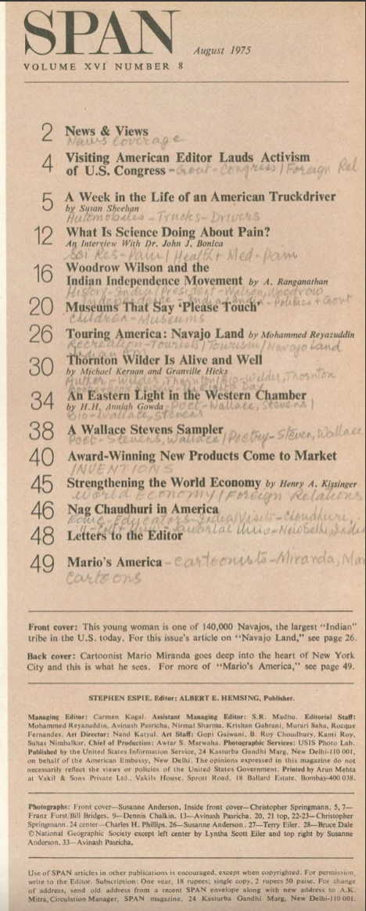
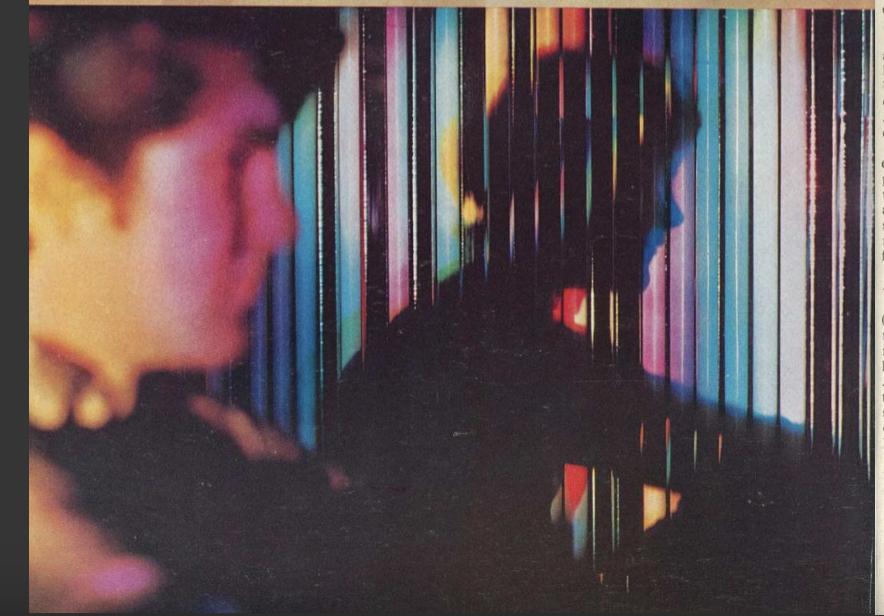
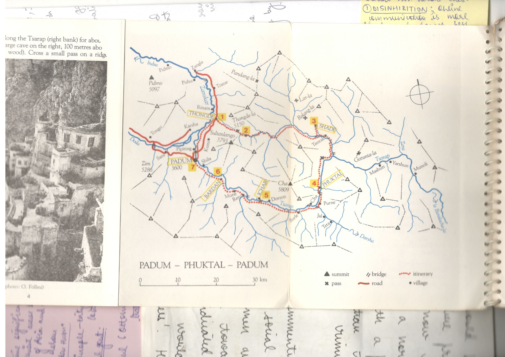

Found this reciept from Delhi Book Fair (1982) burried; holding moments between the stack of old hindi books. My grandfather would always bring back the most amazing things back from wherever he went. According to Carl Jung the best way to discover oneself and heal your inner termoils is by tracing your childhood memories. The only ones I have (or I like to pretent there is nothing else) are of (1.) my grandfather, (2.) the things he had, (3.) the things he brought back and (4.) the things he left behind. Left behind for me to find one day, because consonance.

Inspected that reciept more and found that it was for a magazine subscription. The magazine was called SPAN. Found a cover page from SPAN magazine from February 1969. It is a shot of the Earth as seen from moon by apollo. Obsessed more over it because I am obsessed with all things old and rotting. And found another interesting article.
 The article was not exactly about pain but how to deal with it (and so I did not read it). Meanwhile I sat peacefully inside a train of thoughts about pain related articles that I can write. They are: (1.) Why? (2.) Nevermind the why, what if pain is not just a feeling or a response to some chemical reactions but an actual living thing. Like a Homunculus? (3.) That homunculus idea is cool.
The article was not exactly about pain but how to deal with it (and so I did not read it). Meanwhile I sat peacefully inside a train of thoughts about pain related articles that I can write. They are: (1.) Why? (2.) Nevermind the why, what if pain is not just a feeling or a response to some chemical reactions but an actual living thing. Like a Homunculus? (3.) That homunculus idea is cool.

This index is nice.

╾━╤デ╦︻(▀̿Ĺ̯▀̿ ̿)The idea that coinsidences simply DONOT exist. Even the chaos is so meticulously designed to appear as unbound by rythm. But there is always rythm. Always a beat that hits harder than the other, always a color that looks brighter than the other, always a heart that beats harder than the other, always a person who feels warmer than the other. Does this mean that we go around searching for our musical consonances everywhere we go, in every moment? Such a heartbreaking experience that would be, to find out just how many things and people and moments are just not meant for me.
(｀д´)ゝangy no talky

Few years back I decided I wanted to go visit a Homunculous hibernating inside the highest Ladakhi caves. The caves just like those in Nicholas Roerich sketches. On the wall of Homunculou's cave was the quote "Solitude will transmit the message better than the murmurs of crowds." The cave reflected the meditating Ladakhi sky. I had only heard the stories (there were not many) and was keen to share the same cave myself. However, fate decided on putting me another path and ended up not going. Instead I was at JNU, lying in sweat band naked on a filthy hostel bed, smoking my desires away, legs open. It has been 5 years maybe (I have been having trouble putting numbers on my past), I have been craving the same cave again. Aren't paths that are made because of people walking on them called 'desire paths'?